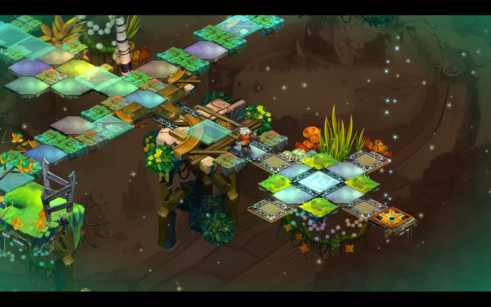
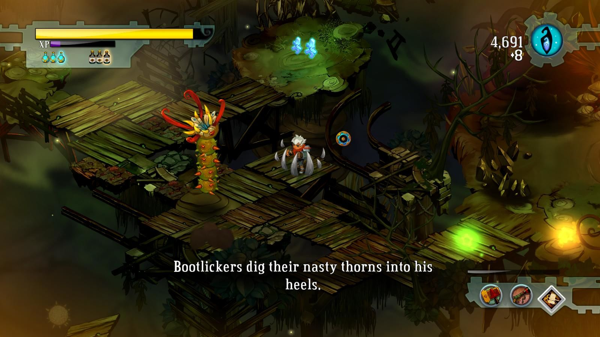
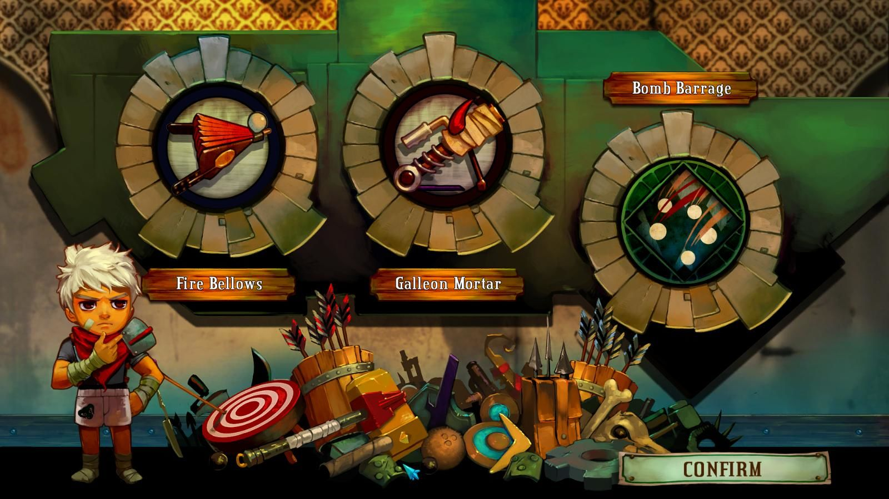

Bastion
summary
Bastion is an action role-playing experience that redefines storytelling in games, with a reactive narrator who marks your every move. Explore more than 40 lush hand-painted environments as you discover the secrets of the Calamity, a surreal catastrophe that shattered the world to pieces. Wield a huge arsenal of upgradeable weapons and battle savage beasts adapted to their new habitat. Finish the main story to unlock the New Game Plus mode and continue your journey! (Steam, 2017)
system requirement
- OS: Windows XP, Vista, 7.
- Processor: 1.7 GHz Dual Core or Greater.
- Memory: 2 GB.
- Hard Disk Space: 1.0 GB.
- Video Card: 512 MB DirectX 9.0c compatible graphics card.
- DirectX: 9.0c.
- Sound: DirectX 9.0c compatible.
gallery
 